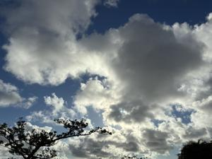
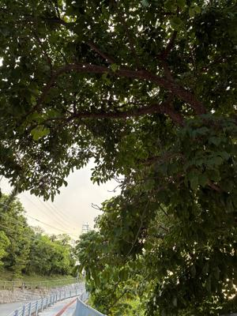
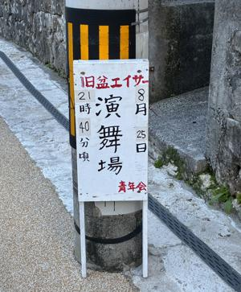
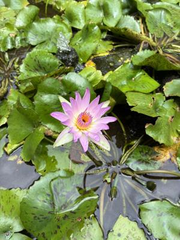

うるがいの話 ある日
最新: 大作【うるがいの話 ある日】とは 一日だけのプログです
『うるがいの話』の最新一日だけのプログで、通信料が少なく経済的だ。カニの画像をクリックすると全ての日付が載る『うるがいの話』サイトを表示します
|
|
【うるがいの話】 うるがい(ｳﾙｶﾞｲ urugai)とは、『もずくがに』の名前でとても大きくなります。 |
|---|---|
|
|
【カミマヤーの話】 猫のことを方言でマヤーといいます。カミマヤー（kamimayaa）とは、神の猫のことです。 |
|
【たながぁの音楽】 たながぁ（ﾀﾅｶﾞｰ tanagaa）とは手長えびのことで、何種類かあり大きいのは車 エビぐらいになります。 |

|
【ぶながぁの話】 ぶながぁ(ﾌﾞﾅｶﾞｰ bunagaa)とは、赤い髪の毛、赤い身体、そして身長は１ｍ２０ｃｍ ぐらい、川の蟹を食べているの目撃された。場所は沖縄県国頭郡大宜味村のと ある村僕の隣近所に住んでいる爺さんから、聞いた話です。 |
|
|
【ギーマの話】 ギーマ(giima)とは、山原の里山に咲くスズランに似た、 花を付けます。実は食べられます、 気が付くと口の周りが紫になっています。 |
2026年08月24日 (月）大作
15:26

きのうの夕方、ジョギングする。雨は降らないだろうと、傘を持
たなかった。ところが、途中２回ほど、小雨が降り、そのたびに
木の下で雨宿りをする。近頃の天気である、晴れても降る。傘は
常に持たないと

旧盆ナカビの夜にエイサーの演武を告知していた。

今のところの予報では、暴風警報が発令されている時間帯である
エイサーと言えば、島太鼓。２月２１日に、着手してユーチュー
ブ動画にアップしたのが。昨日、最後の最後で、楽譜ソフトのバ
ージョンアップによる画面キャプチャーソフトで演奏画面が真っ
白に・・・・。で、古いバージョンを再インストールした。それ
が、これ、島太鼓の音がするだろう。工工四が５頁もある大作で
す。
ダイナミック琉球 二胡 三線 工工四 ５分４４秒
https://youtu.be/XBzPqErOEDM
ヨメのところの室内墓で、お盆をする。本来だと、明日のウンケ
ーであるが、台風を影響を考慮して。朝１０時過ぎだが既に、数
家族がいた。

帰りに、とある高等学校の『和衷協同・積極進取』の横断幕を見
る。字が読めません、ちなみにヨメも読めません。今日の午後か
ら、台風対策に着手しました。